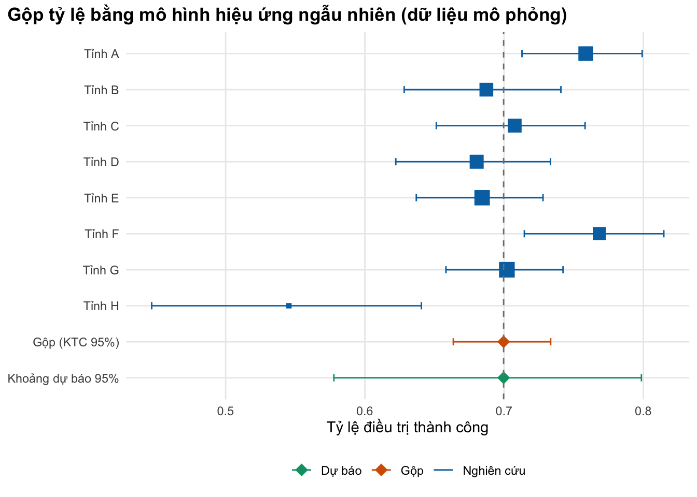
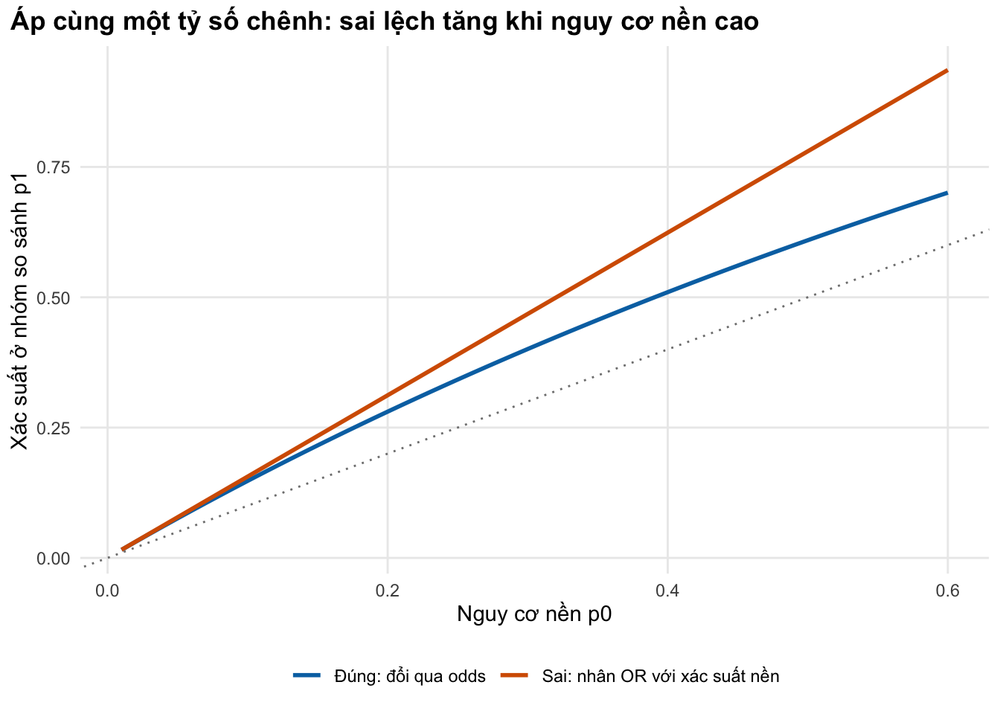

if (!isTRUE(l10n_info()[["UTF-8"]])) invisible(Sys.setlocale("LC_CTYPE", "en_US.UTF-8"))
source("../_shared/R/helpers.R")
source("../_shared/R/vn_data.R")
source("code/model.R")
library(ggplot2)
ps <- read_params("params/synthesis.csv")Bài 4: Tổng hợp bằng chứng cho tham số
Gộp tỷ lệ và tỷ suất bằng mô hình hiệu ứng ngẫu nhiên viết từ đầu, và chuyển HR, RR, OR của thử nghiệm thành xác suất cho mô hình
Vì sao bạn nên quan tâm?
Giám đốc một bệnh viện phổi tỉnh hỏi bạn: phác đồ BPaLM tốt hơn phác đồ đang dùng bao nhiêu, khi hai nguồn số liệu không khớp nhau? Năm 2021–2022, chương trình chống lao quốc gia điều trị 4,814 người lao kháng rifampicin: 71.2% thành công, 13.3% bỏ điều trị và 7.8% tử vong; còn thử nghiệm TB-PRACTECAL báo cáo BPaLM giảm kết cục bất lợi từ 48% xuống 11%, nhưng ở một quần thể khác và so với một nhóm chứng khác. Mỗi điểm phần trăm thành công tương ứng khoảng 48 người trong một lứa người bệnh như vậy, và mỗi người phải điều trị lại tốn ít nhất 12,185,360 VNĐ tiền thuốc phác đồ dài hạn, bằng 2.3 tháng lương tối thiểu vùng I. Bài này giúp bạn biến số liệu nhiều tỉnh và kết quả thử nghiệm thành xác suất đúng cho mô hình Việt Nam.
Mục tiêu học tập
Sau bài này, bạn có thể:
- Gộp tỷ lệ (trên thang logit) và tỷ suất (trên thang log) từ nhiều nghiên cứu bằng mô hình hiệu ứng ngẫu nhiên (random-effects) DerSimonian–Laird viết bằng base R.
- Đọc và báo cáo mức không đồng nhất giữa các nghiên cứu (\(\tau^2\), \(I^2\)) và khoảng dự báo (prediction interval), và chọn con số phù hợp cho mô hình.
- Áp nguy cơ tương đối (RR), tỷ số chênh (OR) và tỷ số nguy cơ tức thời (HR) lên nguy cơ nền (baseline risk) của Việt Nam để ra xác suất cho mô hình.
- Nhận ra các phép chuyển đổi sai thường gặp và kiểm tra chúng bằng code.
Ý chính
- Một tham số tốt dùng mọi bằng chứng phù hợp, không phải nghiên cứu tình cờ tìm thấy đầu tiên.
- Gộp trên thang biến đổi (logit cho tỷ lệ, log cho tỷ suất), rồi biến đổi ngược. Không lấy trung bình cộng các tỷ lệ.
- Mô hình hiệu ứng ngẫu nhiên giả định mỗi nghiên cứu có giá trị thật riêng; \(\tau^2\) đo độ phân tán của các giá trị thật đó, \(I^2\) là tỷ lệ biến thiên do phân tán thật.
- Khoảng tin cậy nói về giá trị trung bình; khoảng dự báo nói về một bối cảnh mới. Một tỉnh chưa có trong dữ liệu gần với khoảng dự báo hơn.
- Mô hình cần xác suất trong bối cảnh Việt Nam: lấy hiệu quả tương đối từ thử nghiệm, áp lên nguy cơ nền của Việt Nam.
- RR nhân thẳng vào xác suất; OR phải đi qua odds; HR áp lên xác suất cộng dồn dưới dạng lũy thừa. Hiệu số nguy cơ (RD) giả định hiệu quả cộng không đổi, điều hiếm khi đúng giữa hai nguy cơ nền rất khác nhau, và có thể cho xác suất ngoài khoảng 0–1.
- Nguy cơ nền phải ứng với đúng nhóm so sánh của thử nghiệm, và OR đã điều chỉnh từ nghiên cứu quan sát không phải hiệu quả nhân quả: dùng nó như bài tập số học, không như đầu vào mô hình.
- Nhân OR với xác suất nền chỉ gần đúng khi sự kiện hiếm; ở nguy cơ nền vài chục phần trăm, sai số đáng kể.
Nội dung
Vì sao phải gộp, và gộp trên thang nào
Tham số như “tỷ lệ điều trị thành công” hay “tỷ suất tái phát” thường có ở nhiều nghiên cứu với kết quả khác nhau. Chỉ chọn một nghiên cứu là tùy tiện; lấy trung bình cộng bỏ qua cỡ mẫu. Phân tích gộp (meta-analysis) lấy trung bình có trọng số theo độ chính xác.
Tỷ lệ bị chặn trong khoảng 0–1 và phương sai phụ thuộc vào chính tỷ lệ, nên ta gộp trên thang logit \(y_i = \ln[p_i/(1-p_i)]\) với phương sai xấp xỉ \(v_i = 1/e_i + 1/(n_i - e_i)\), rồi biến đổi ngược. Biến đổi arcsine kép Freeman–Tukey được một số tác giả ưa dùng (Barendregt và c.s. 2013), nhưng phép biến đổi ngược của nó có thể cho kết quả sai lệch nghiêm trọng (Schwarzer và c.s. 2019); thang logit đơn giản và dễ kiểm tra hơn. Tỷ suất (số sự kiện chia người-năm) được gộp trên thang log với \(v_i \approx 1/e_i\).
Mô hình hiệu ứng ngẫu nhiên DerSimonian–Laird
Mô hình hiệu ứng cố định (fixed effect) giả định mọi nghiên cứu ước lượng cùng một giá trị. Ở bài toán chương trình (nhiều tỉnh, nhiều bệnh viện), giả định này hiếm khi đúng. Mô hình hiệu ứng ngẫu nhiên (random effects) cho phép giá trị thật \(\theta_i\) khác nhau quanh trung bình \(\mu\) với phương sai \(\tau^2\) (DerSimonian và Laird 1986):
\[ y_i = \theta_i + \varepsilon_i,\quad \varepsilon_i \sim N(0, v_i),\qquad \theta_i \sim N(\mu, \tau^2). \]
Ước lượng theo các bước, mỗi bước là một dòng R:
\[ w_i = \frac{1}{v_i},\quad Q = \sum w_i (y_i - \hat\mu_{\text{FE}})^2,\quad \hat\tau^2 = \max\!\left(0, \frac{Q - (k-1)}{\sum w_i - \sum w_i^2/\sum w_i}\right), \]
\[ w_i^* = \frac{1}{v_i + \hat\tau^2},\quad \hat\mu = \frac{\sum w_i^* y_i}{\sum w_i^*},\quad \text{SE}(\hat\mu) = \sqrt{1/\textstyle\sum w_i^*}. \]
\(I^2 = (Q - (k-1))/Q\) là tỷ lệ biến thiên quan sát được do khác biệt thật giữa các nghiên cứu chứ không do may rủi chọn mẫu (Higgins và Thompson 2002). Khoảng dự báo 95% cho giá trị thật ở một bối cảnh mới là \(\hat\mu \pm t_{k-2}\sqrt{\hat\tau^2 + \text{SE}^2}\) (Riley, Higgins, và Deeks 2011).
Con số nào vào mô hình? Phân tích cơ sở dùng \(\hat\mu\) (biến đổi ngược). Khi mô hình đại diện cho chính tập bối cảnh đã có dữ liệu, độ bất định của tham số là khoảng tin cậy. Khi mô hình đại diện cho một bối cảnh mới, khoảng dự báo thích hợp hơn. M03 đưa các khoảng này vào phân tích độ nhạy xác suất.
Khi có ít nghiên cứu. Khoảng tin cậy chuẩn của DerSimonian–Laird dùng phân phối chuẩn và coi \(\hat\tau^2\) như đã biết, nên với ít nghiên cứu nó thường quá hẹp. Phương pháp Hartung–Knapp–Sidik–Jonkman (HKSJ) ước lượng phương sai từ độ phân tán của chính các nghiên cứu quanh \(\hat\mu\) và dùng phân phối \(t\) với \(k-1\) bậc tự do; mô phỏng cho thấy HKSJ cho tỷ lệ sai loại I sát mức danh nghĩa hơn DL, nhất là khi số nghiên cứu ít (IntHout, Ioannidis, và Borm 2014). Hàm meta_dl() trả cả hai khoảng.
Chuyển hiệu quả tương đối thành xác suất
Thử nghiệm thường báo cáo hiệu quả tương đối; mô hình cần xác suất tuyệt đối trong bối cảnh của mình. Cách làm chuẩn: lấy nguy cơ nền \(p_0\) từ số liệu Việt Nam và áp hiệu quả tương đối của thử nghiệm (Gidwani và Russell 2020).
| Thước đo | Định nghĩa | Áp lên nguy cơ nền \(p_0\) (cùng khoảng thời gian) |
|---|---|---|
| Nguy cơ tương đối (RR) | \(p_1/p_0\) | \(p_1 = \text{RR}\cdot p_0\) (kiểm tra \(p_1 \le 1\)) |
| Tỷ số chênh (OR) | \(\dfrac{p_1/(1-p_1)}{p_0/(1-p_0)}\) | \(p_1 = \dfrac{\text{OR}\, p_0/(1-p_0)}{1 + \text{OR}\, p_0/(1-p_0)}\) |
| Tỷ số nguy cơ tức thời (HR) | \(h_1(t)/h_0(t)\), giả định không đổi | \(p_1 = 1 - (1 - p_0)^{\text{HR}}\) |
| Hiệu số nguy cơ (risk difference, RD) | \(p_1 - p_0\) | \(p_1 = p_0 + \text{RD}\) (giả định hiệu quả cộng không đổi; có thể ra xác suất âm) |
Công thức đổi OR sang RR của Zhang và Yu, \(\text{RR} = \text{OR}/(1 - p_0 + p_0\,\text{OR})\) (Zhang và Yu 1998), cho cùng kết quả với dòng OR trong bảng: cả hai chỉ là đi qua odds với nguy cơ nền \(p_0\). Với HR, công thức trong bảng đến từ \(S_1(t) = S_0(t)^{\text{HR}}\) khi nguy cơ tỷ lệ; tương đương, nhân tỷ suất nền với HR rồi đổi sang xác suất (Fleurence và Hollenbeak 2007).
Hai chi tiết thường bị bỏ qua. Thứ nhất, quần thể phân tích: TB-PRACTECAL báo cáo kết cục bất lợi 11% với BPaLM và 48% với chăm sóc chuẩn trong quần thể mITT (phân tích theo ý định điều trị có điều chỉnh), nhưng 4% và 12% trong quần thể per-protocol (theo đúng phác đồ) (Nyang’wa và c.s. 2022). Hai quần thể cho hai hiệu quả tương đối khác hẳn nhau. Thứ hai, định nghĩa kết cục và khung thời gian: kết cục 72 tuần của thử nghiệm không trùng với kết cục cuối điều trị của chương trình (Nguyen và c.s. 2026). Ghi rõ cả hai lựa chọn trong bảng tham số.
Thực hành
Nạp bảng tham số. Phần gộp dùng dữ liệu mô phỏng (tám tỉnh giả định); phần chuyển đổi dùng số liệu thật đã kiểm chứng.
Mô phỏng tám đoàn hệ: cỡ mẫu ngẫu nhiên, giá trị thật mỗi tỉnh lệch quanh 72% trên thang logit với độ lệch chuẩn 0.35, số ca thành công rút từ phân phối nhị thức. Kiểm tra: số ca không vượt cỡ mẫu.
# SIMULATED data: treatment success in 8 provincial cohorts (not real studies)
set.seed(2025)
k <- ps$sim_k
studies <- data.frame(study = paste("Tỉnh", LETTERS[seq_len(k)]),
n = round(stats::runif(k, ps$sim_n_min, ps$sim_n_max)))
true_logit <- stats::rnorm(k, logit(ps$sim_p), ps$sim_tau)
studies$events <- stats::rbinom(k, studies$n, expit(true_logit))
studies$p_obs <- studies$events / studies$n
studies study n events p_obs
1 Tỉnh A 377 286 0.7586207
2 Tỉnh B 259 178 0.6872587
3 Tỉnh C 277 196 0.7075812
4 Tỉnh D 269 183 0.6802974
5 Tỉnh E 399 273 0.6842105
6 Tỉnh F 272 209 0.7683824
7 Tỉnh G 453 318 0.7019868
8 Tỉnh H 99 54 0.5454545stopifnot(all(studies$events <= studies$n), nrow(studies) == k)Gộp bằng hàm pool_proportions(), so sánh với hiệu ứng cố định, cộng dồn thô và trung bình cộng. Kiểm tra: trọng số cộng bằng 1, sai số chuẩn của mô hình hiệu ứng ngẫu nhiên không nhỏ hơn của hiệu ứng cố định, khoảng dự báo chứa khoảng tin cậy.
pp <- pool_proportions(studies$events, studies$n)
pool_tab <- data.frame(
method = c("Hiệu ứng cố định", "Hiệu ứng ngẫu nhiên (DerSimonian-Laird, KTC chuẩn)",
"Hiệu ứng ngẫu nhiên (cùng ước lượng, KTC Hartung-Knapp)",
"Cộng dồn thô (tổng ca / tổng mẫu)", "Trung bình cộng các tỷ lệ"),
estimate = c(expit(pp$mu_fe), pp$p, pp$p, sum(studies$events) / sum(studies$n), mean(studies$p_obs)),
lo = c(expit(pp$mu_fe - 1.96 * pp$se_fe), pp$p_ci[1], pp$p_ci_hksj[1], NA, NA),
hi = c(expit(pp$mu_fe + 1.96 * pp$se_fe), pp$p_ci[2], pp$p_ci_hksj[2], NA, NA)
)
pool_tab method estimate lo
1 Hiệu ứng cố định 0.7038664 0.6851699
2 Hiệu ứng ngẫu nhiên (DerSimonian-Laird, KTC chuẩn) 0.6996440 0.6635182
3 Hiệu ứng ngẫu nhiên (cùng ước lượng, KTC Hartung-Knapp) 0.6996440 0.6483308
4 Cộng dồn thô (tổng ca / tổng mẫu) 0.7056133 NA
5 Trung bình cộng các tỷ lệ 0.6917240 NA
hi
1 0.7219032
2 0.7334493
3 0.7463986
4 NA
5 NAc(tau2 = pp$tau2, Q = pp$Q, df = pp$df, I2 = pp$I2, pi_lo = pp$p_pi[1], pi_hi = pp$p_pi[2]) tau2 Q df I2 pi_lo pi_hi
0.04005862 24.05816368 7.00000000 0.70903847 0.57774666 0.79861749 # Checks: weights sum to 1; the random-effects CI is at least as wide as the fixed-effect CI;
# the prediction interval contains the CI; the HKSJ CI is wider than the normal CI here (few studies)
stopifnot(abs(sum(pp$weights) - 1) < 1e-12, pp$se >= pp$se_fe,
pp$p_pi[1] <= pp$p_ci[1], pp$p_pi[2] >= pp$p_ci[2],
pp$p_ci_hksj[1] < pp$p_ci[1], pp$p_ci_hksj[2] > pp$p_ci[2])
# The text calls the heterogeneity high (I2 above 50%) and the prediction interval much wider than the CI
stopifnot(pp$I2 > 0.5, diff(pp$p_pi) > 1.5 * diff(pp$p_ci))Tỷ lệ gộp là 70.0% (KTC 95%: 66.4%–73.3%). Mức không đồng nhất cao: \(I^2\) = 70.9%, \(\hat\tau^2\) = 0.040. Vì vậy khoảng dự báo cho một tỉnh mới rộng hơn hẳn, từ 57.8% đến 79.9%. Nếu mô hình dành cho một tỉnh chưa có trong dữ liệu, độ bất định thật gần với khoảng này. Với 8 nghiên cứu, KTC theo HKSJ (64.8%–74.6%) rộng hơn KTC chuẩn.
Vẽ biểu đồ rừng (forest plot): từng tỉnh với khoảng tin cậy, kích thước điểm theo trọng số, cùng ước lượng gộp và khoảng dự báo. Kiểm tra bằng mắt: tỉnh có mẫu lớn có điểm to và khoảng hẹp, và khoảng dự báo rộng hơn khoảng tin cậy gộp.
forest_dat <- data.frame(label = studies$study, p = pp$study$p, lo = pp$study$lo, hi = pp$study$hi,
weight = pp$study$weight, type = "Nghiên cứu")
forest_dat <- rbind(forest_dat,
data.frame(label = "Gộp (KTC 95%)", p = pp$p, lo = pp$p_ci[1], hi = pp$p_ci[2],
weight = NA, type = "Gộp"),
data.frame(label = "Khoảng dự báo 95%", p = pp$p, lo = pp$p_pi[1], hi = pp$p_pi[2],
weight = NA, type = "Dự báo"))
forest_dat$label <- factor(forest_dat$label, levels = rev(forest_dat$label))
is_study <- forest_dat$type == "Nghiên cứu"
fig_forest <- ggplot(forest_dat, aes(p, label, colour = type)) +
geom_errorbar(aes(xmin = lo, xmax = hi), width = 0.2, orientation = "y") +
geom_point(data = forest_dat[is_study, ], aes(size = weight), shape = 15, show.legend = FALSE) +
geom_point(data = forest_dat[!is_study, ], shape = 18, size = 4) +
geom_vline(xintercept = pp$p, linetype = "dashed", colour = "grey50") +
scale_colour_manual(values = c("Nghiên cứu" = pal_course[1], "Gộp" = pal_course[2],
"Dự báo" = pal_course[3]), name = NULL) +
scale_size_continuous(range = c(1.5, 5)) +
labs(x = "Tỷ lệ điều trị thành công", y = NULL,
title = "Gộp tỷ lệ bằng mô hình hiệu ứng ngẫu nhiên (dữ liệu mô phỏng)") +
theme_course()
save_fig(fig_forest, "l04-forest.png")
Gộp tỷ suất tái phát từ tám đoàn hệ mô phỏng trên thang log, rồi đổi sang xác suất mỗi tháng cho mô hình.
# SIMULATED relapse data: events and person-years in 8 cohorts, pooled on the log scale
rate_dat <- data.frame(study = paste("Đoàn hệ", seq_len(k)),
py = round(stats::runif(k, ps$sim_py_min, ps$sim_py_max)))
rate_true <- exp(stats::rnorm(k, log(ps$sim_rate), ps$sim_tau_rate))
rate_dat$events <- stats::rpois(k, rate_true * rate_dat$py)
rate_dat study py events
1 Đoàn hệ 1 1979 22
2 Đoàn hệ 2 2301 25
3 Đoàn hệ 3 657 6
4 Đoàn hệ 4 3023 70
5 Đoàn hệ 5 964 12
6 Đoàn hệ 6 787 8
7 Đoàn hệ 7 2225 19
8 Đoàn hệ 8 1626 10pr <- pool_rates(rate_dat$events, rate_dat$py)
rate_tab <- data.frame(rate_per_1000py = 1000 * c(pr$rate, pr$rate_ci, pr$rate_pi),
what = c("gộp", "KTC thấp", "KTC cao", "dự báo thấp", "dự báo cao"))
rate_tab rate_per_1000py what
1 11.074015 gộp
2 7.705273 KTC thấp
3 15.915567 KTC cao
4 3.362842 dự báo thấp
5 36.467308 dự báo cao# Into a monthly model: rate per year / 12, then p = 1 - exp(-r t)
p_month_relapse <- rate_to_prob(pr$rate / 12)
p_month_relapse[1] 0.0009224089Tỷ suất gộp là 11.1 trên 1,000 người-năm, khoảng dự báo 3.4–36.5. Xác suất tái phát mỗi tháng là 0.00092.
Bây giờ chuyển hiệu quả của TB-PRACTECAL sang Việt Nam, với hai điều cần làm đúng. Một là quy ước kết cục: bài coi “không thành công” là 1 trừ thành công, nên người không được đánh giá (4.2%) tính vào nhóm không thành công, cho mọi nguy cơ nền; bài báo nguồn có thể định nghĩa khác, cần kiểm tra khi dùng thật. Hai là nguy cơ nền phải ứng với đúng nhóm so sánh: nhóm đối chứng của TB-PRACTECAL là phác đồ chuẩn 9–20 tháng, tức phác đồ dài hạn, trong khi nguy cơ nền của chương trình quốc gia 2021–2022 (Nguyen và c.s. 2026) gộp mọi phác đồ. Ta chưa có nguy cơ nền riêng của phác đồ dài hạn, nên thêm một xấp xỉ từ OR đã điều chỉnh của chính nghiên cứu (mục kế tiếp). Kiểm tra: RR và OR cho xác suất trong khoảng 0–1; so xác suất chuyển với nguy cơ ở nhóm BPaLM của thử nghiệm.
# TB-PRACTECAL effect measures applied to a Vietnamese baseline.
# Convention for every baseline in this lesson: unfavourable = 1 - success, so patients who
# were not evaluated (about 4%) count as unfavourable. The trial comparator is a 9-20 month
# regimen, i.e. a LONG regimen, so the matching baseline is the Vietnamese long-regimen risk.
# We do not have it directly; two stand-ins are shown and compared.
p0_all <- 1 - ps$vn_success # all regimens mixed (short, injectable, long)
p0_bdq <- 1 - ps$vn_success_bdqstr # bedaquiline short regimen (reference group)
p0_long <- apply_or(p0_bdq, ps$aor_long) # long regimen, from the adjusted OR (approximation, see l04-or)
baselines <- c("Mọi phác đồ (hỗn hợp)" = p0_all, "Phác đồ dài hạn (xấp xỉ từ aOR)" = p0_long)
eff <- data.frame(
population = c("mITT", "per-protocol"),
p_bpalm = c(ps$unf_bpalm_mitt, ps$unf_bpalm_pp),
p_soc = c(ps$unf_soc_mitt, ps$unf_soc_pp),
rd_reported = c(ps$rd_mitt, ps$rd_pp)
)
eff$rd_from_rounded <- eff$p_bpalm - eff$p_soc
eff$rr <- eff$p_bpalm / eff$p_soc
eff$or <- (eff$p_bpalm / (1 - eff$p_bpalm)) / (eff$p_soc / (1 - eff$p_soc))
eff population p_bpalm p_soc rd_reported rd_from_rounded rr or
1 mITT 0.11 0.48 -0.37 -0.37 0.2291667 0.1338951
2 per-protocol 0.04 0.12 -0.09 -0.08 0.3333333 0.3055556# Transport each measure to each baseline, then compare with the risk seen in the trial's BPaLM arm
transport <- do.call(rbind, lapply(seq_along(baselines), function(b) {
p0 <- baselines[[b]]
data.frame(baseline = names(baselines)[b], p0 = p0, population = eff$population,
rd = p0 + eff$rd_reported, rr = apply_rr(p0, eff$rr), or = apply_or(p0, eff$or),
p_trial_bpalm = eff$p_bpalm)
}))
transport baseline p0 population rd rr
1 Mọi phác đồ (hỗn hợp) 0.2880000 mITT -0.08200000 0.06600000
2 Mọi phác đồ (hỗn hợp) 0.2880000 per-protocol 0.19800000 0.09600000
3 Phác đồ dài hạn (xấp xỉ từ aOR) 0.3276154 mITT -0.04238458 0.07507853
4 Phác đồ dài hạn (xấp xỉ từ aOR) 0.3276154 per-protocol 0.23761542 0.10920514
or p_trial_bpalm
1 0.05137725 0.11
2 0.11000000 0.04
3 0.06124407 0.11
4 0.12958718 0.04# Sanity: RR and OR stay inside [0, 1]; a transported risk below the trial's own BPaLM-arm
# risk is a warning sign that a constant relative effect does not hold at this baseline
stopifnot(all(transport$rr >= 0 & transport$rr <= 1), all(transport$or >= 0 & transport$or <= 1))
below_trial <- with(transport, rr < p_trial_bpalm)
below_trial[1] TRUE FALSE TRUE FALSE# The text: with the mITT effect, RD gives a negative probability at both baselines, and the RR result
# falls below the risk seen in the trial's own BPaLM arm (rows 1 and 3 are the mITT rows)
mitt <- transport$population == "mITT"
stopifnot(all(transport$rd[mitt] < 0), all(below_trial[mitt]))Với nguy cơ nền mọi phác đồ 28.8%, RR của mITT cho xác suất không thành công với BPaLM là 6.6%, OR cho 5.1%, còn hiệu số nguy cơ cho xác suất âm (-8.2%): nó giả định hiệu quả cộng không đổi (-37 điểm phần trăm) dù nguy cơ nền thấp hơn nhiều so với 48% của nhóm đối chứng. Nguy cơ nền phác đồ dài hạn (32.8%) cải thiện một phần, không sửa được lỗi này (mITT vẫn cho -4.2%). RR ở mITT (6.6% với nền mọi phác đồ, 7.5% với phác đồ dài hạn) còn thấp hơn nguy cơ quan sát ở nhóm BPaLM của thử nghiệm (11%). Điều đó chỉ đúng nếu người bệnh Việt Nam nhẹ hơn ở mọi yếu tố ngoài phác đồ, và các nguyên nhân không do phác đồ (bỏ điều trị, tử vong vì bệnh khác) cũng co theo cùng tỷ lệ; hai giả định cần nêu rõ và thử. Ví dụ minh họa cơ chế, không phải ước tính hiệu quả BPaLM tại Việt Nam. Ở per-protocol, RR cho 9.6%; hiệu số nguy cơ công bố là -9 điểm phần trăm, trong khi tính từ phần trăm làm tròn ra -8, nên cần lưu số ca và cỡ mẫu (không có trong tóm tắt). Chọn quần thể nào là quyết định cần nêu và thử độ nhạy.
Nghiên cứu Việt Nam báo cáo tỷ số chênh điều chỉnh (aOR) của kết cục bất lợi giữa phác đồ dài hạn và phác đồ ngắn có bedaquiline là 1.56 (KTC 95%: 1.32–1.84) (Nguyen và c.s. 2026). Hãy dùng nó như bài tập số học trên thang odds, không như đầu vào mô hình. (a) Đây là nghiên cứu quan sát: phác đồ được chọn theo tình trạng người bệnh (ví dụ người kháng fluoroquinolone thường không đủ điều kiện dùng phác đồ ngắn), nên aOR chịu nhiễu theo chỉ định (confounding by indication), không phải hiệu quả nhân quả. (b) aOR là OR có điều kiện theo các biến trong mô hình và không co gọn được (non-collapsible): áp nó lên nguy cơ nền thô của nhóm ngắn chỉ cho xấp xỉ, không cho nguy cơ biên của nhóm dài. (c) Khoảng của kết quả chỉ phản ánh bất định của OR, vì nguy cơ nền được coi là đã biết. Khi cần chuyển hiệu quả, dùng hiệu quả tương đối từ thử nghiệm ngẫu nhiên hoặc nguy cơ biên chuẩn hóa (standardised) từ chính mô hình hồi quy. Với bài tập, lấy nguy cơ nền là tỷ lệ không thành công của phác đồ ngắn (23.8%) và đổi OR thành xác suất cho phác đồ dài hạn.
# Vietnamese adjusted OR (long vs bedaquiline short regimen) -> probability for the long regimen.
# This is an arithmetic exercise on the odds scale: the OR is observational and conditional (see text).
or_vals <- param_range(ps, "aor_long")
or_tab <- data.frame(
or = or_vals,
rr_zhang_yu = or_to_rr(or_vals, p0_bdq),
p_long_correct = apply_or(p0_bdq, or_vals),
p_long_naive = p0_bdq * or_vals
)
or_tab or rr_zhang_yu p_long_correct p_long_naive
est 1.56 1.376535 0.3276154 0.37128
lo 1.32 1.226583 0.2919269 0.31416
hi 1.84 1.533436 0.3649577 0.43792# Sanity: an OR above 1 must raise the risk, and multiplying the OR by the baseline overshoots it
stopifnot(all(or_tab$p_long_correct > p0_bdq), all(or_tab$p_long_naive > or_tab$p_long_correct))Xác suất không thành công với phác đồ dài hạn (xấp xỉ) là 32.8%. Nhân thẳng OR với nguy cơ nền cho 37.1%, cao hơn 4.4 điểm phần trăm. RR tương ứng theo công thức Zhang–Yu là 1.38, không phải 1.56. Tóm tắt bài báo không cho tỷ lệ không thành công thô của phác đồ dài hạn; khi có, hãy so với 32.8% để thấy xấp xỉ này lệch bao nhiêu.
Vẽ xác suất đúng (qua odds) và xác suất sai (nhân thẳng) theo nguy cơ nền. Kiểm tra bằng mắt: hai đường gần nhau ở nguy cơ nền thấp và tách ra khi nguy cơ nền tăng.
grid <- data.frame(p0 = seq(0.01, 0.6, by = 0.01))
conv <- rbind(
data.frame(p0 = grid$p0, p1 = apply_or(grid$p0, ps$aor_long), method = "Đúng: đổi qua odds"),
data.frame(p0 = grid$p0, p1 = grid$p0 * ps$aor_long, method = "Sai: nhân OR với xác suất nền")
)
fig_or <- ggplot(conv, aes(p0, p1, colour = method)) +
geom_line(linewidth = 1) +
geom_abline(slope = 1, intercept = 0, linetype = "dotted", colour = "grey50") +
scale_colour_manual(values = pal_course[c(1, 2)], name = NULL) +
labs(x = "Nguy cơ nền p0", y = "Xác suất ở nhóm so sánh p1",
title = "Áp cùng một tỷ số chênh: sai lệch tăng khi nguy cơ nền cao") +
theme_course()
save_fig(fig_or, "l04-or-conversion.png")
Cuối cùng, một HR thật: trong đoàn hệ quốc gia ở Nam Phi, phác đồ có bedaquiline đi kèm nguy cơ tử vong thấp hơn so với phác đồ chuẩn có thuốc tiêm, 0.35 (KTC 95%: 0.28–0.46) (Schnippel và c.s. 2018). Đây là nghiên cứu quan sát, ở nơi tỷ lệ đồng nhiễm HIV cao, nên ta dùng nó để học cách áp HR, không như hiệu quả của BPaLM tại Việt Nam. Áp HR lên tỷ lệ tử vong trong điều trị của chương trình quốc gia, coi như xác suất cộng dồn trong 18 tháng, rồi đổi sang xác suất mỗi tháng. Cửa sổ thời gian là một giả định: tỷ lệ tử vong gộp mọi phác đồ, kể cả phác đồ ngắn 9–11 tháng. Kiểm tra: HR = 1 không làm thay đổi gì, và xác suất tháng cộng dồn lại đúng bằng xác suất cả đợt.
# Hazard ratio on a cumulative probability over the longer regimen, then a monthly probability.
# The HR is a real but observational estimate (bedaquiline-containing vs standard regimens, South
# Africa). The window is an assumption: the national death share (all regimens, same denominator
# as above) is treated as a cumulative probability over the longer-regimen duration.
p0_death <- ps$vn_death
hr <- ps$hr_bdq_death
hr_ci <- param_range(ps, "hr_bdq_death")
hr_tab <- data.frame(
quantity = c("Nguy cơ nền trong cả đợt điều trị", "Áp HR đúng: 1 - (1 - p0)^HR",
"Sai: p0 x HR"),
p_course = c(p0_death, apply_hr(p0_death, hr), p0_death * hr)
)
hr_tab$p_month <- 1 - (1 - hr_tab$p_course)^(1 / ps$dur_long)
hr_tab quantity p_course p_month
1 Nguy cơ nền trong cả đợt điều trị 0.07800000 0.004501507
2 Áp HR đúng: 1 - (1 - p0)^HR 0.02802337 0.001577838
3 Sai: p0 x HR 0.02730000 0.001536572# Checks: HR = 1 changes nothing; monthly probabilities compound back to the course probability
stopifnot(abs(apply_hr(p0_death, 1) - p0_death) < 1e-15,
all(abs(1 - (1 - hr_tab$p_month)^ps$dur_long - hr_tab$p_course) < 1e-12))
# Deaths averted per 100 patients at the HR and at its 95% CI limits
averted_100 <- 100 * (p0_death - apply_hr(p0_death, hr_ci))
averted_100 est lo hi
4.997663 5.551776 4.133253 naive_gap_pp <- 100 * abs(hr_tab$p_course[3] - hr_tab$p_course[2])
# Baselines for Exercise 3: low, the national death share, high; and for Exercise 2
ex3_p0 <- c(0.02, ps$vn_death, 0.30)
ex2_p0 <- 0.10Với HR này, cứ 100 người bệnh thì tránh được khoảng 5.0 ca tử vong (4.1–5.6 theo hai đầu KTC). Ở nguy cơ nền thấp như 7.8%, nhân thẳng \(p_0 \times \text{HR}\) chỉ lệch 0.07 điểm phần trăm so với công thức đúng. Bài tập 3 cho thấy sai lệch tăng theo nguy cơ nền.
Mẹo thực hành
- Lưu dữ liệu từng nghiên cứu (số ca, cỡ mẫu hoặc người-năm, năm, bối cảnh) trong một bảng riêng; kết quả gộp phải chạy lại được từ bảng đó.
- Luôn vẽ biểu đồ rừng (forest plot) trước khi tin con số gộp: một nghiên cứu lệch hẳn có thể là khác định nghĩa kết cục, không phải khác hiệu quả.
- Báo cáo cả khoảng dự báo. Với số liệu chương trình nhiều tỉnh, đây thường là con số trung thực nhất về bất định.
- Viết hàm áp hiệu quả tương đối có kiểm tra (
apply_rr()cảnh báo khi vượt 1) và gọi nó ở mọi nơi, thay vì nhân tay rải rác trong mô hình.
Lỗi thường gặp
- Lấy trung bình cộng các tỷ lệ. Nghiên cứu 50 người và nghiên cứu 500 người không thể có trọng số bằng nhau.
- Nhân OR với xác suất nền. Chỉ gần đúng khi sự kiện hiếm; ở nguy cơ nền 23.8%, sai 4.4 điểm phần trăm.
- Chuyển hiệu số nguy cơ sang nguy cơ nền khác. Có thể ra xác suất âm như ví dụ trên.
- Áp RR hoặc OR của một khung thời gian lên nguy cơ nền của khung khác (ví dụ RR của 72 tuần lên xác suất một tháng). RR và OR phụ thuộc khung thời gian; HR là thước đo duy nhất giữ nguyên qua các khung nếu nguy cơ tỷ lệ không đổi. Khi đổi khung thời gian, đi qua tỷ suất (M02 Bài 2).
- Dùng nguy cơ nền của quần thể khác nhóm so sánh, hoặc dùng aOR quan sát như hiệu quả nhân quả. Kiểm tra nhóm so sánh của thử nghiệm và so xác suất chuyển với nguy cơ trong chính thử nghiệm.
Bài tập
- (Dễ) Phân tích “bỏ một”: gộp lại sau khi lần lượt bỏ từng tỉnh. Tỉnh nào ảnh hưởng nhiều nhất tới kết quả?
Lời giải
# Exercise 1: leave-one-out sensitivity of the pooled proportion
loo <- vapply(seq_len(k), function(i) pool_proportions(studies$events[-i], studies$n[-i])$p, numeric(1))
data.frame(left_out = studies$study, p_obs = round(studies$p_obs, 3), pooled = round(loo, 3)) left_out p_obs pooled
1 Tỉnh A 0.759 0.690
2 Tỉnh B 0.687 0.701
3 Tỉnh C 0.708 0.698
4 Tỉnh D 0.680 0.702
5 Tỉnh E 0.684 0.701
6 Tỉnh F 0.768 0.690
7 Tỉnh G 0.702 0.698
8 Tỉnh H 0.545 0.713loo_up <- which.max(loo) # the province whose removal raises the pooled estimate most
c(province = studies$study[loo_up], p_obs = studies$p_obs[loo_up], rank_low = rank(studies$p_obs)[loo_up]) province p_obs rank_low
"Tỉnh H" "0.545454545454545" "1" # The text calls this province the most influential: its removal moves the pooled value more than any other
stopifnot(which.max(abs(loo - pp$p)) == loo_up)Bỏ Tỉnh H (tỷ lệ quan sát 54.5%, thấp nhất trong 8 tỉnh) làm ước lượng gộp tăng nhiều nhất, lên 71.3%. Nếu kết quả gộp phụ thuộc vào một nghiên cứu, hãy kiểm tra định nghĩa kết cục và chất lượng của nghiên cứu đó trước khi quyết định.
- (Vừa) Áp tỷ số chênh 1.56 lên nguy cơ nền 10%. So sánh với cách nhân thẳng.
Lời giải
# Exercise 2: the Vietnamese OR applied at a lower baseline risk (10%)
ex2 <- c(correct = apply_or(ex2_p0, ps$aor_long), naive = ex2_p0 * ps$aor_long)
ex2 correct naive
0.1477273 0.1560000 # Closer together than at the lesson's baseline (OR approximates RR when events are rare)
stopifnot(ex2[["naive"]] - ex2[["correct"]] < or_tab$p_long_naive[1] - or_tab$p_long_correct[1])Ở nguy cơ nền thấp, hai cách gần nhau hơn so với nguy cơ nền trong bài, đúng như dự đoán: OR xấp xỉ RR khi sự kiện hiếm.
- (Khó) Với HR = 0.35, tính số tử vong tránh được trên mỗi người ở ba nguy cơ nền 2%, 7.8% và 30%. Kết luận gì về việc chuyển hiệu quả từ thử nghiệm sang các nhóm người bệnh có nguy cơ khác nhau?
Lời giải
# Exercise 3: is the effect of the HR larger in absolute terms at a high or a low baseline?
# Also: how wrong is the shortcut p0 x HR at each baseline?
ex3 <- data.frame(p0 = ex3_p0, p1 = apply_hr(ex3_p0, hr))
ex3$averted <- ex3$p0 - ex3$p1
ex3$naive_p1 <- ex3$p0 * hr
ex3$naive_error <- ex3$naive_p1 - ex3$p1
ex3 p0 p1 averted naive_p1 naive_error
1 0.020 0.007046007 0.01295399 0.0070 -4.600723e-05
2 0.078 0.028023371 0.04997663 0.0273 -7.233713e-04
3 0.300 0.117358559 0.18264144 0.1050 -1.235856e-02stopifnot(all(diff(ex3$averted) > 0), all(diff(ex3$naive_error) < 0))Cùng một HR, số tử vong tránh được tăng mạnh theo nguy cơ nền, và lối tắt \(p_0 \times \text{HR}\) sai nhiều hơn (về độ lớn) khi nguy cơ nền cao (cột naive_error). Lợi ích tuyệt đối, và do đó tỷ số chi phí-hiệu quả gia tăng (ICER), phụ thuộc vào nguy cơ nền của quần thể mô hình, nên nguy cơ nền phải lấy từ số liệu Việt Nam và được phân tích độ nhạy riêng.
Tài liệu tham khảo
Kịch bản video (~14 phút)
| # | Slide | Lời giảng chính | Hình/Code |
|---|---|---|---|
| 1 | Một tham số, nhiều nghiên cứu | lấy một nghiên cứu là tùy tiện; gộp có trọng số | — |
| 2 | Thang biến đổi | logit cho tỷ lệ, log cho tỷ suất; tránh biến đổi ngược Freeman–Tukey | công thức |
| 3 | Cố định hay ngẫu nhiên | mỗi tỉnh một giá trị thật; \(\tau^2\) | sơ đồ công thức |
| 4 | DerSimonian–Laird trong base R | năm dòng code; kiểm tra trọng số | chunk l04-pool |
| 5 | \(I^2\), khoảng dự báo, HKSJ | \(I^2\) = 70.9%; khoảng dự báo 57.8%–79.9%; ít nghiên cứu thì dùng HKSJ | figs/l04-forest.png |
| 6 | Tỷ suất | gộp trên thang log; đổi sang xác suất tháng | chunk l04-rates |
| 7 | Hiệu quả tương đối + nguy cơ nền Việt Nam | bảng RR, OR, HR, RD | bảng công thức |
| 8 | TB-PRACTECAL sang Việt Nam | đúng nhóm so sánh; mITT vs per-protocol; RD cho xác suất âm; kiểm tra với nhóm BPaLM của thử nghiệm | chunk l04-transport |
| 9 | OR không phải RR | 32.8% vs 37.1%; aOR quan sát, có điều kiện, không co gọn | figs/l04-or-conversion.png |
| 10 | HR và khung thời gian | \(1-(1-p_0)^{HR}\); đổi sang xác suất tháng | chunk l04-hr |
| 11 | Chuyển tiếp | đầu vào đã đủ; ra quyết định và báo cáo → Bài 5 | — |